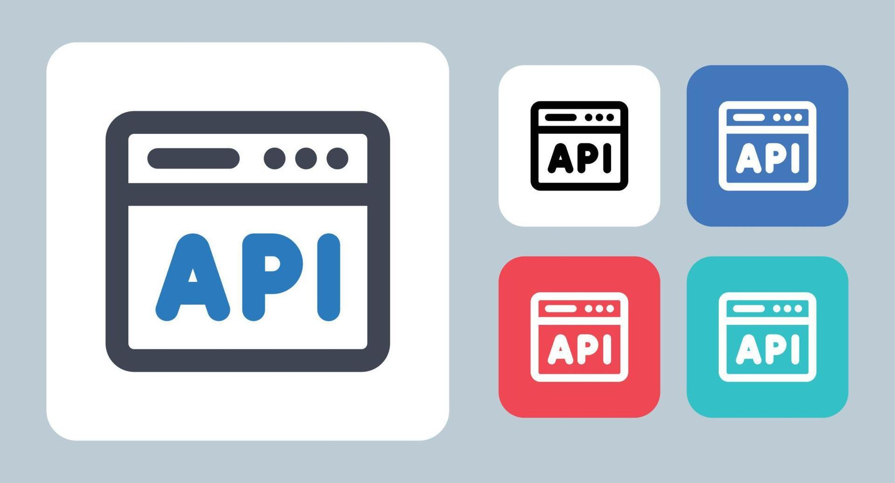
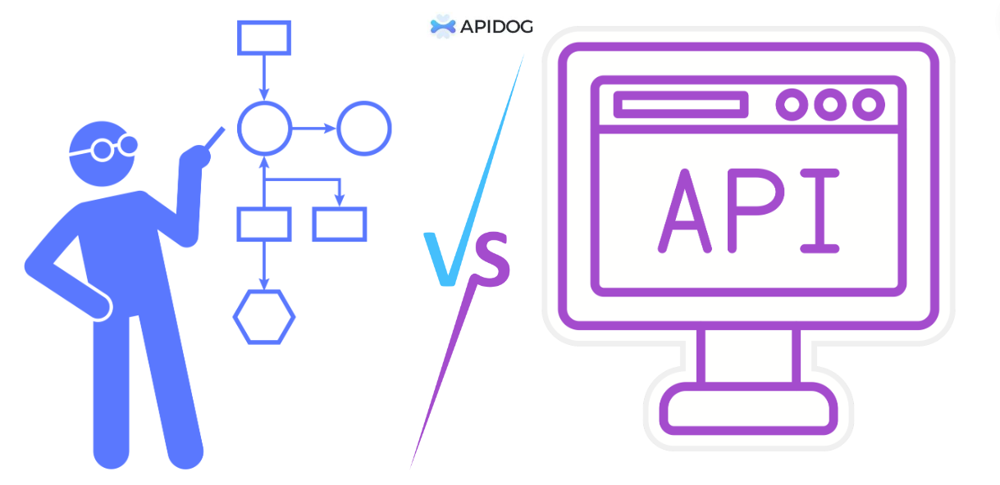

Desarrollo de Aplicaciones Web Orientadas a Servicios
Los frameworks son estructuras de trabajo que facilitan el desarrollo de aplicaciones orientadas a servicios. Proporcionan herramientas, librerías y buenas prácticas que permiten crear APIs de forma estructurada, segura y escalable.
El desarrollo de una API consiste en diseñar y programar endpoints que permitan la comunicación entre diferentes sistemas mediante protocolos como HTTP y el uso de formatos como JSON. Este proceso incluye análisis, diseño, implementación y pruebas del servicio.
Las APIs permiten la interoperabilidad entre sistemas, facilitando la integración de aplicaciones web, móviles y plataformas externas dentro de un mismo ecosistema digital.
En esta unidad se estudian los fundamentos y herramientas necesarias para el desarrollo de APIs dentro de aplicaciones web orientadas a servicios.

Identificación de frameworks utilizados para el desarrollo de aplicaciones orientadas a servicios, como herramientas que simplifican la creación de APIs modernas.

Análisis del proceso completo de desarrollo de una API, incluyendo planeación, diseño de endpoints, implementación, pruebas y documentación.
Identificar frameworks en el desarrollo de aplicaciones orientadas a servicios, reconociendo sus características principales y su aplicación en entornos web.
Identificar el proceso de desarrollo de programación de aplicaciones (API), comprendiendo cada una de sus etapas desde el análisis hasta la implementación final.